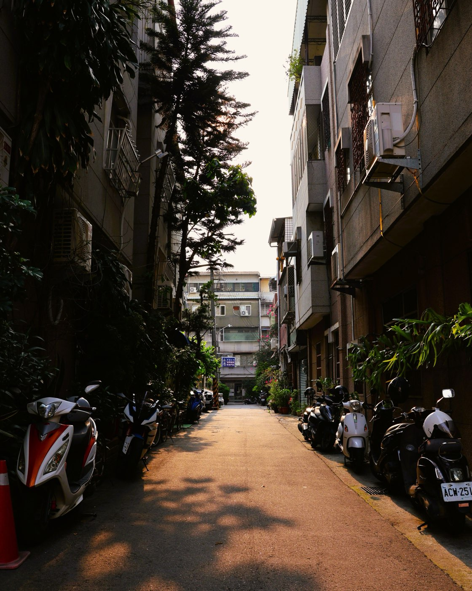

售後回租是：房子過戶給投資方、同時簽租約繼續住，並保有日後依約買回的權利。在不中斷生活的前提下快速取得大額資金，實際金額依不動產條件核定。
賣掉房子，還能繼續住，並保留買回權利。售後回租是把不動產出售並過戶給投資方、同時簽租約繼續居住的安排——可一次取得市值約 7–9 成的資金，且因為是買賣加租約而非貸款，不全看信用分數。適合信用瑕疵、被銀行拒、或不想搬家又急需大筆資金的屋主。本公司非金融機構，最終成交條件依個案而定。
售後回租（Sale-Leaseback）是一種靈活的不動產資金運用方式：屋主將名下房屋出售並過戶給投資方取得現金，同時與投資方簽訂長期租約，以租客身份繼續居住在同一處，並在合約中保有按約定條件買回房產的選擇權。
因為租約與買賣同步簽訂，過戶後仍住在原處、生活不中斷，卻能快速取得大額資金處理財務需求。
| 售後回租 （鋮馨） |
直接出售 | 銀行貸款 | |
|---|---|---|---|
| 繼續居住 | ✓ 可以 | ✗ 需搬家 | ✓ 可以 |
| 快速取得資金 | ✓ 快速 | 視成交時間 | 需審核 2–4 週 |
| 信用不完美可評估 | ✓ 可以 | ✓ 可以 | ✗ 有限制 |
| 保有買回機會 | ✓ 有選擇權 | ✗ 無 | ✓ 仍持有 |
| 適合急需資金者 | ✓ 最適合 | 尚可 | 條件受限 |
售後回租＝房屋過戶給投資方＋簽租約繼續居住＋保有依約買回權利，三者一組。是否適合依個案不動產條件與財務狀況評估；本公司非金融機構。
辦理後，不動產過戶（所有權移轉）至投資方，你成為租客。但合約中保有買回選擇權，你可以在約定期間內按原定條件買回房屋，重新成為所有人。在此期間，你的居住權受租約完整保障。
可取得的資金金額依物件條件、地段、屋況、屋齡及市場行情而定，個案差異可能很大。鋮馨租賃提供免費評估，加入 LINE 說明物件基本資料即可取得初步試算。
可以。售後回租以不動產市值為主要評估依據，信用分數並非唯一條件。即使曾遭銀行拒貸、有信用瑕疵、或有多筆負債，只要名下有不動產，均可申請免費評估。
買回為屋主的「選擇權」，並非強制義務。若屆期選擇不行使買回權，依合約條款協議處理。所有細節在簽約前會逐條說明，你充分了解後再做決定，沒有任何強迫。
租金依據市場行情及物件條件議定，並在簽約前明確載入租約。整體財務安排在提案說明時會完整試算給你看，確保方案對你有利才進入簽約階段。
免費評估，1–2 個工作日內回覆初步結果。不申請不收費，充分了解後再決定。